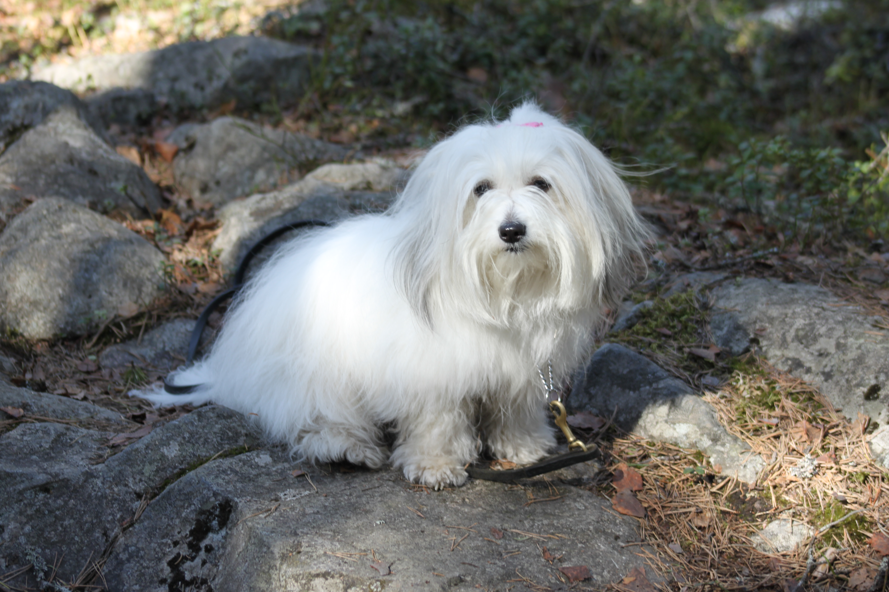
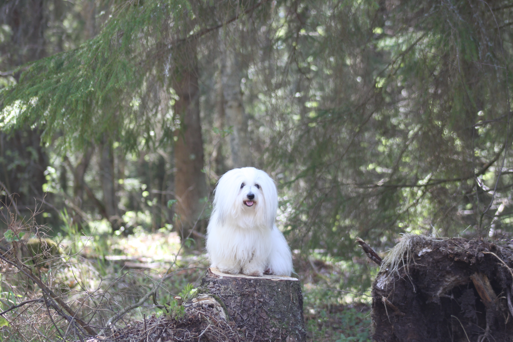
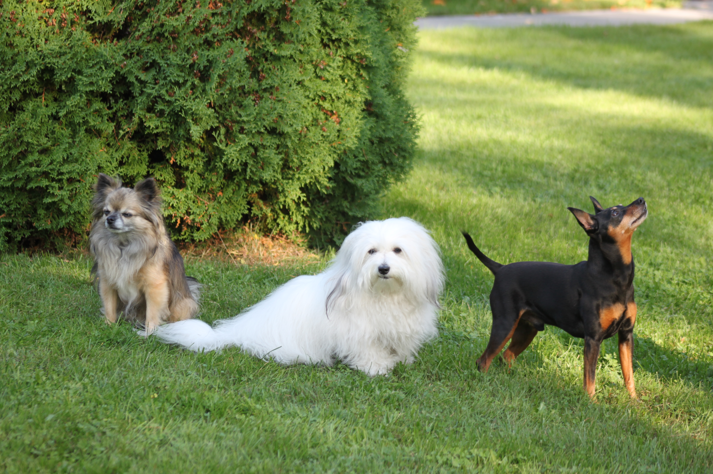

Milan uusi takki
Mila sai uuden vaaleanpunaisen takin. Uusi takki pääsi heti ulkoiluun mukaan.
Lue lisääTervetuloa koirani Milan kotisivuille. Näillä kotisivuilla voit seurata Milan arkielämää ja seikkailuja, katsella kuvia päivittäisistä puuhista ja tutustua myös yleisesti coton de tulear -rotuun.
Mila on 9-vuotias coton de tulear, iloinen, seurallinen ja leikkisä koira. Hän on luonteeltaan utelias ja kiinnostunut ympäristöstään ja aina innokas tutustumaan uusiin ihmisiin. Hän rakastaa pysähtyä lenkeillä tutkimaan uusia tuoksuja ja paikkoja.
Milan lempipuuhaa ovat metsälenkit, rannalla kahlaaminen, hiekan kaivaminen ja leluilla leikkiminen. Metsässä Mila viihtyy erityisen hyvin, sillä siellä riittää paljon tutkittavaa. Myös rannalla on mukava käydä, varsinkin silloin kun pääsee kahlailemaan vedessä.
Vaikka Mila on jo 9-vuotias, hän on edelleen leikkisä ja innostuu helposti erilaisista tekemisistä. Hän nauttii yhdessä vietetystä ajasta ja on mielellään mukana kaikissa arjen touhuissa.
Mila on rakas perheenjäsen ja hänen kanssaan jokainen päivä on täynnä iloa. Näillä sivuilla pääsee tutustumaan Milan elämään, hänen lempipuuhiinsa ja yleisesti coton de tulear rotuun.




